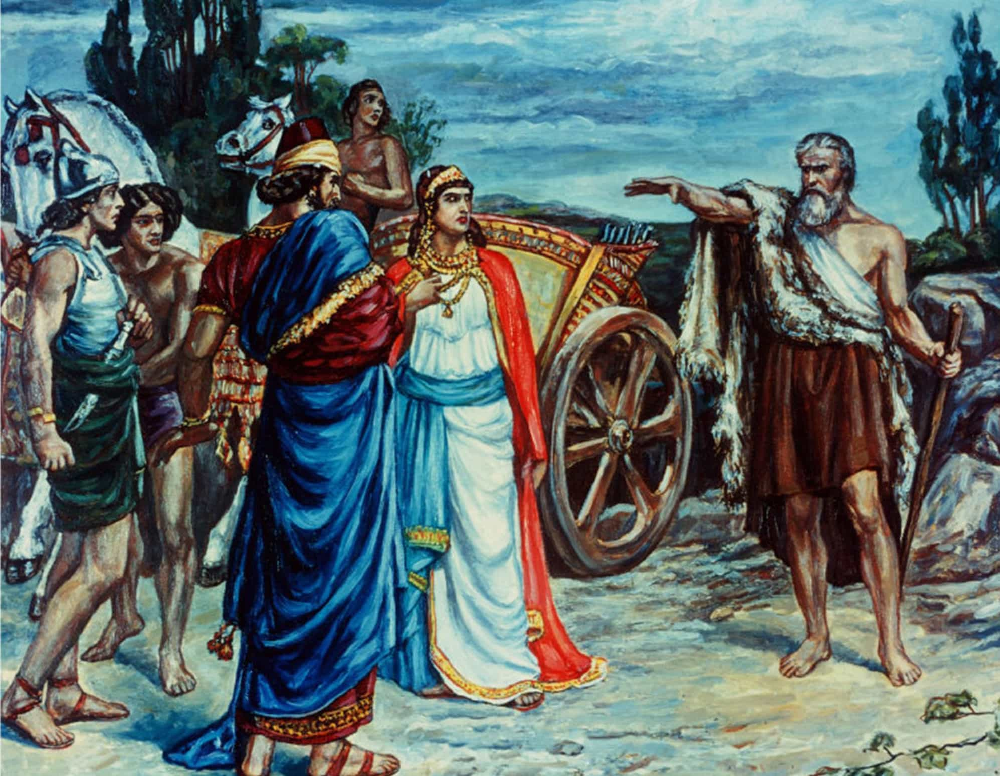

< < < Back
Modern Culture Mirrors Jezebel’s Poisonous Spirit – Return Of Kings
As the example of Gomer, the Biblical story of Jezebel and her husband Ahab often bears applicability to the cultural state of modern feminist societies. Her cultural symbolism throughout the ages has been with false prophets, fallen women, paganism, apostasy, deception, manipulation, seduction—and, in modern times, with feminist women.
The spirit of Jezebel and her crimes
According to the Hebrew Book of Kings, Jezebel (a name with disputable multiple meanings: 1.”Not exalted,” or 2. “Where is the Prince?”, an allegorical ritual cry from pagan worship ceremonies in honor of the pagan deity Baal during periods of the year when he was considered to be in the underworld)— was a Phoenician princess, the daughter of Ethbaal, who was the king of Tyre, and a priest of Baal. Jezebel incited her husband Ahab, the king of North Israel, to abandon the worship of God and encourage worship of the false deities Baal and Ashtart (also called Ishtar) instead.
She is notable for her rebellion against God via promotion of witchcraft and idolatry and ruthless persecution of the Biblical prophets of her time through her husband. She is also guilty of deception, as seen in the fabrications of false evidence of blasphemy against an innocent landowner called Naboth who refused to sell his property to King Ahab, causing the landowner to be put to death. For these transgressions and crimes against God and people of Israel, Jezebel met a gruesome death as prophesized by the prophet Elijah. She was thrown out of a window by members of her own court retinue, and the flesh of her corpse eaten by stray dogs.

The article “Jezebel, in our society” aptly describes the spirit of Jezebel. Here is an excerpt:
“The Jezebel spirit is born of witchcraft and rebellion. This demon is one of the most common spirits in operation today, both in the church and in the world, and it is a powerful enemy of the body of Christ. She operates freely on sincere believers whose hearts are for God individually, and has also attained positions of power as powers and principalities within the Church. This spirit establishes its stronghold primarily in women; however, many men have been victimized by it as well, where it functions as a “controlling” spirit.
The spirit of Jezebel is behind the daughter of Democracy, i. e. Feminism.
The Spirit of Jezebel is basically a controlling spirit working through the lust of the flesh, and the lust of the eyes, and the pride of life. It has, in general, two aims:
To gain identity, glory, recognition, power, and satisfy the need for the “praises of men”. This is a consequence of the desire for love and self-worth focused on SELF.
Secondly the Jezebel spirit is a men hater and seeks to emasculate all men, and divest them of their authority and power over others. It fosters a distrust and hatred of men in general. The “Jezebel spirit” is in a constant agitation, terribly aggressive, very determined, callous, controlling, selfish, power-hungry, manipulative, unrepentant, deceitful spirit, an overwhelmingly evil spirit, and those are mostly only it’s good points! Indeed this spirit can be definitely named “Satan’s woman”.
There are two main types of the Jezebel spirit:
The high-profile type is generally gregarious, outspoken and highly visible. She is often seen as the “woman who wears the pants in the family”.
The low-profile type is soft-spoken, giving the illusion of being solicitous, motherly, protective, even appearing very submissive. The low-profile type may be the most dangerous, as she is the most difficult to discern. She relies heavily on manipulation for her power, in extremely subtle performances.”
The notable point to be noted in her death was her ostentatious decoration of herself, akin to prostitutes of those times, just before she was thrown to her death by her servants–which Isaac Asimov describes as a deliberate symbolism of her arrogant determination to go out of this life as a “queen.”
Jezebel’s religious beliefs, glorification and “humanization” by modern society, and her modern day sisters
Jezebel promoted the ancient religion of the Canaanites which included Baal and Ashtart worship. Ashtart is a Semitic Goddess of Love and War and the Canaanite Great Goddess who is the cult partner of Ba’al (“the King”). Heterosexual orgies were associated with Ashtart whereas homosexual orgies were associated with Baal. The spring equinox (spring break) was associated with ritual sex orgies to honor Astart.
Drunken revelry and debauchery; modern day “pagan” spring equinox festivals of old?
Today, Jezebel is often glorified by apologetics (usually women) as an example of female power, domination, and strength who was victimized by the “misogynist” authors of the Bible, while often disregarding or underplaying the glaring crimes and atrocities she committed in her earthly life. Her refusal to submit even in her death (actually out of her pride), is apologetically portrayed in recent modern times, as feminist heroism and victimization by a patriarchal culture of those times.
Feminist apologetics even paint her humanely, as a “faithful” polytheist woman to her husband and her faith, while comparing Elijah as a villainous fundamentalist rabblerouser similar to a modern day religious extremist. They state that Jezebel’s harlotry was spiritual, and not literal—since polytheism was often referred to as harlotry—but what must be noted that the Baal and Ashtart worship Jezebel promoted was related to ritual sex and sacred prostitution. Since there is no “factual” information on Jezebel, such apologetic acquittals of her using “historical imagination” are just as likely to be correct or incorrect as any other.
One fact is common: Jezebel was a ruthless Godless tyrannical woman who defied human dignity, weaved outrageous lies, shed innocent blood, spread corruption—all to satisfy her ego—and she deserves her bad reputation. Nevertheless, she remains a role model and heroine for feminists, with modern apologetic feminist versions of her story .
Feminists accuse that Jezebel’s vilification in the Bible was because of the “victorious” who wrote (distorted) Biblical history. Feminists are actually rewriting modern history by embodying Jezebel’s traits by deed due to the proliferation and dominance of feminism in modern societies, so it’s the case of the pot calling the kettle black.
Thus, the name Jezebel (from the Biblical example of Jezebel herself) itself has become synonymous with a scheming woman. The 1938 hit “Jezebel” was one of the earliest adaptations of a headstrong scheming woman whose actions cost her the man she loves, but later schemes to win him back as for her “the end justifies the means”—and who is told by her aunt that she reminds her aunt of “Jezebel, a woman who did evil in the sight of the Lord”.
Many men today deal with such scheming women in their day to day lives. Compare the Biblical Jezebel’s traits with feminism-bred, modern women you’d commonly see around you, which are explored below:
- Hatred towards men (covert or open)? Check.
-
Extravagance, hustling and materialistic greed? Check.
- Spiritual harlotry and skepticism or general disdain for patriarchal religion? Check.
-
Witchcraft and occult Sympathies? Check.
- Deception, habitual lying and cunning manipulation? Check.
-
No sense of justice? Check.
- Promotion of sexual profligacy to fellow women? Check.
- Hubris and capriciousness? Check.
- General refusal to accept mistakes, no conscience and shamelessness? Check.
The reason why Jezebelian traits are increasingly seen in modern feminist women is the same as what defined Jezebel herself: spiritual rebellion or disgust to patriarchal religion in modern feminist societies. With the rise of witchcraft (Jezebel’s faith) in modern societies, more women turn away from patriarchal religion. And religious and spiritual corruption then sets the tone for eventual moral corruption, as godless women will obviously act in godless ways.
The rising skepticism towards religion itself in the modern world further complicates the problem. As mentioned above, the influx of the Jezebelian spirit into religious institutions further poisons the very framework which could possibly have exorcised the roots of the Jezebelian spirit in the modern world.
Modern day Ahabs: Manginas and White Knights
Ahab represents the powerful yet identity-less, henpecked monogamous posturing beta—totally controlled by his mate Jezebel. He even committed gross injustices and crimes on the innocent as on Naboth, at her behest. Henpecked men, white knights, and manginas are thus common modern day examples of Ahab. The pussy-whipped meek husband is the unassuming version of Ahab, for he allows his domineering wife to not only take the decisions and steer him into whichever direction that she wishes, but also because he doesn’t take charge to either change her or himself to assume control.
Ahab’s life represents that of a resourceful and powerful man who had no identity of his own, and often depended on his woman to define his identity by allowing her to lead him. He was a mere tool in her hands, for her to achieve her aims.
But in the modern world, isn’t it common to see an educated, intelligent, successful man abandon his sane judgment, spiritual identity and dignity to be manipulated into unjust and godless behavior by the women he loves or desires—whether he may be married or single—very much like Ahab? And for what? Often simply for sake of sex and companionship with his partner.
Just like how Ahab killed Naboth at the behest of his wife, so do many modern men commonly commit crimes and injustices at the behest of their women. Throw into this picture greed, material success and sensual pleasure and the modern man will never detach himself from his Jezebelian mate. The addiction to earthly and material pleasures over spiritual and mental development is commonly seen in modern day Ahabs. In a modern world where materialism is the religion, modern day Ahabs will easily rationalize to themselves and to others the evil behavior instigated by their Jezebelian mates, as being ‘pragmatic’ and often ‘necessary’.
Conclusion
The story of Jezebel and Ahab shows the seeds of corruption of a society: weak godless influential men coupled with controlling corruptedgodless women. “Behind every successful man is a woman”: this is the lie propagated in modern feminist societies. But the real truth is that “behind every successful woman is a man”—as seen in Jezebel’s story. Her weak husband’s immense social power and influence, helped her to achieve her evil designs. She would’ve been nothing had she not married a powerful weakling like Ahab, to achieve her vile aims and promote her religious ideology. The same analogy can be applied to feminists and manginas. Without manginas and white knights, feminists (or for that matter feminism) would never have achieved prominence. Male complacency eventually leads to female tyranny.
Religious and spiritual decline are the first signs of the impending corruption of a society. The spiritual corruption commonly seen in modern feminist societies not only results in the moral decline of civilization, but will also eventually result in the proliferation of modern day Jezebels and Ahabs. It ‘s a serious problem, as every man (moreso red pill), irrespective of his religious beliefs, could or would suffer on account of these modern day Jezebels and Ahabs, like Naboth.
Feminism is the modern day religion which eventually produces and harbors them. And these signs look ominous for the future generations.
Read More: The Disturbing Relationship Between Feminism And The Occult


{kind=link}
{kind=link}
{kind=link}
{kind=link}
{kind=link}
{kind=link}
{kind=link}
{kind=link}
{kind=link}